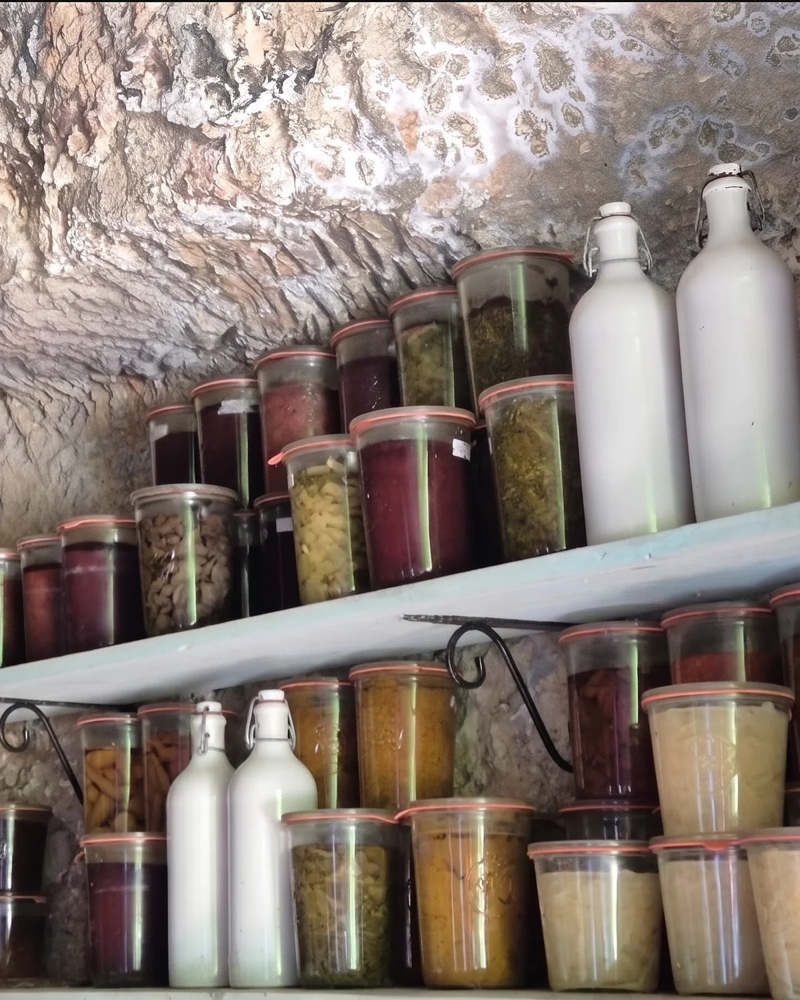
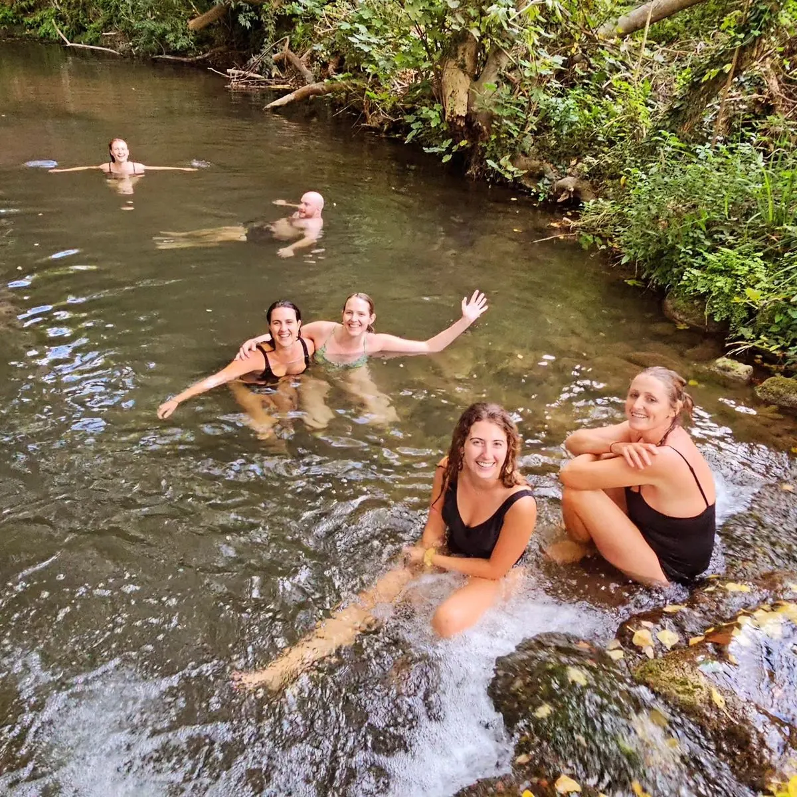
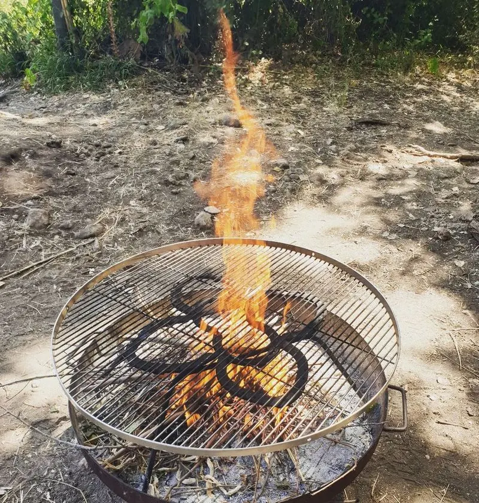
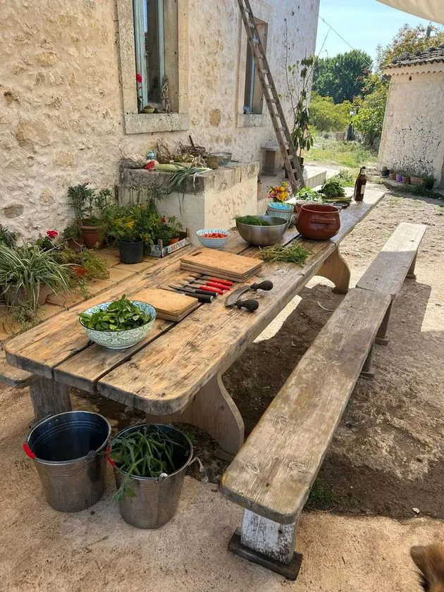
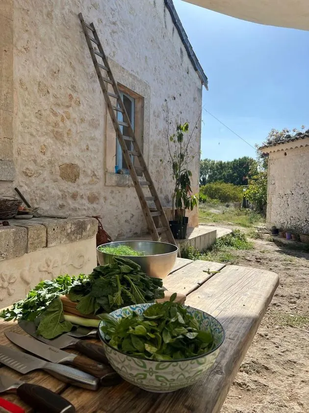
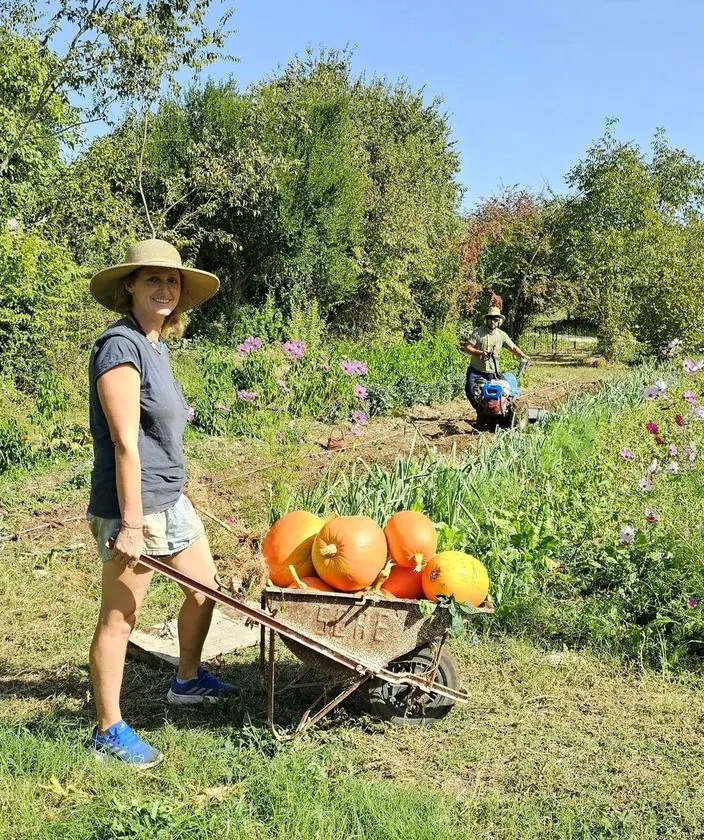

Sunday lunch, every day of the week.
 Watch: the Sunday lunch
Watch: the Sunday lunch
Not a cooking class. Not just a meal. A food journey into Sicilian tradition: one whole day on our farm, in seven movements, like the colors of the rainbow and the notes of the scale.

Lunch starts in the soil.
We gather together in the organic garden and collect everything for lunch. What is ripe today becomes the menu.
A cellar carved in rock, 2,000 years old.
Step inside, where a year of harvests waits in jars. Choose the wine, learn how we preserve the harvest, and taste cheese, honey and olive oil from our neighbors.

Our grandmothers’ secrets of the fire.
We share the secrets of our grandmothers’ fire cooking, side by side with you. The formula is an old one: the more people we are, the more food we can make.
The recipe that keeps a family together.
Cooking together is the recipe that has kept Italian families together, and humanity together, for thousands of years. Everyone has a hand in the lunch, and no one cooks alone.
From wheat to ravioli.
Hear the story of heirloom wheat and stone-milled flour, then roll, fill and fold your own.
Strangers sit down. Friends get up.
The moment everyone has been waiting for. Over a feast of garden dishes, we play an ancient ceremonial game at the table, sharing the best of ourselves through poetry, music, dance and storytelling. Children and adults play together.
End the day in clear water.
In summer, swim in the river that carved the canyon. In cooler months, we gather in the farmhouse.

At a glance
Choose your date
See the days that are open and book right here.
Calendar not showing? Open the booking page.
Follow our days on the farm











There is a seat for you at our table.
Sunday lunch, served every day of the week. Choose your date and we will send everything you need.